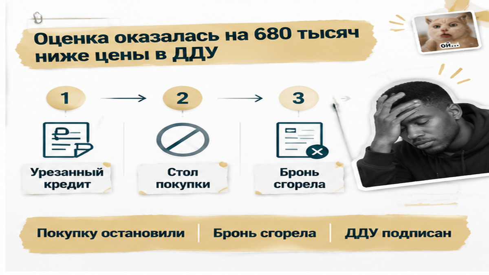
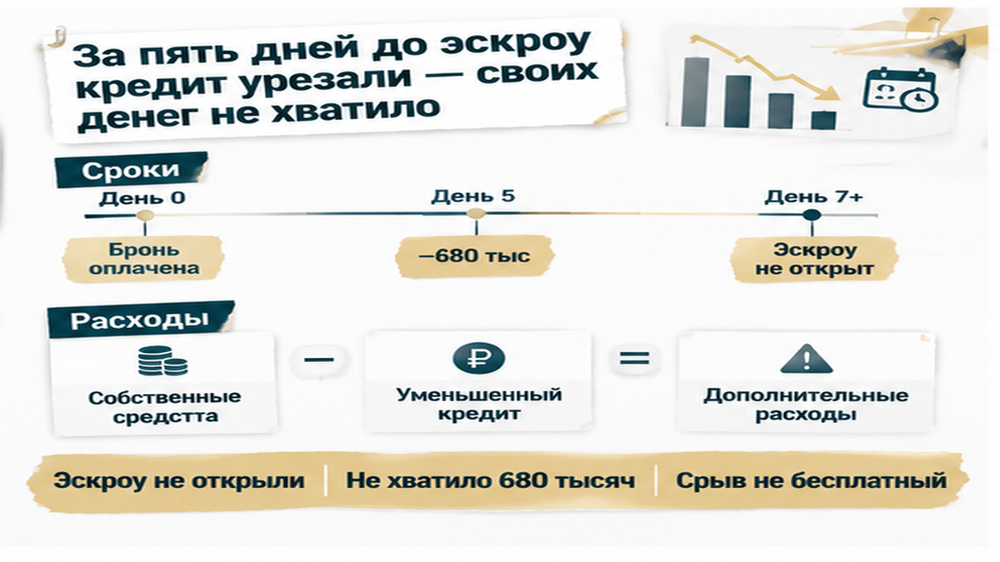

В Тюмени семье урезали ипотеку на 680 000 ₽ за пять дней до открытия эскроу — ДДУ на квартиру в новостройке уже подписали. В то утро менеджер банка сообщил: после проверки объекта максимальная сумма кредита стала меньше. На кухне разложили договор, калькулятор и выписку с одобрением, но прежний расчёт больше не сходился. Как так: квартиру выбрали, ипотеку одобрили, а денег на покупку вдруг недостаточно? Расскажу изнутри, где заканчивается предварительное «да» банка и начинается проверка конкретной квартиры.
Я — Святослав Шакин, The Риэлтор, Тюмень. Разбираю покупку новостроек простым языком в Telegram и MAX: что проверить до подписи и какие вопросы задать до перевода денег.
Семья выбрала квартиру в строящемся доме на севере Тюмени, внесла плату за бронь и получила предварительное одобрение ипотеки. Рассчитала первоначальный взнос, примерила ежемесячный платёж к бюджету и подписала договор долевого участия.
Для покупателя это почти финиш: есть квартира, договор и сообщение банка с суммой. Оставшееся легко принять за техническую работу — собрать документы, пройти регистрацию, оформить кредит.
Но здесь спрятана развилка. Предварительное одобрение заёмщика — ещё не окончательный лимит по выбранному объекту. До выдачи банк проверяет документы, квартиру и стоимость будущего обеспечения.
Вместо «Мне одобрили ипотеку?» стоит спросить: «Эта сумма уже подтверждена под этот лот или ещё может измениться после проверки?» Разница в формулировке небольшая. В финансовом плане — существенная.
ДДУ закрепляет цену между покупателем и застройщиком, но не обязывает банк выдать сумму, которую семья заложила в расчёт. У кредитора свои условия финансирования.
Подписание и регистрация ДДУ, открытие эскроу, выдача кредита — не одно событие. Разобрал эту границу отдельно в материале об одобрении ипотеки и неоткрытом эскроу.
Следующим этапом стала оценка. Для семьи квартира уже была выбранным жильём. Для банка — ещё и будущим залогом, стоимость которого требовалось проверить.
Но как оценить помещение, которое пока нельзя осмотреть как готовую квартиру? Оценщик опирается на проектную документацию, декларацию застройщика, характеристики лота и сопоставимые предложения, учитывает стадию строительства, класс проекта и планировку.
Если аналогов мало, расчёт может оказаться осторожнее ожиданий покупателя. Цена застройщика и оценочная стоимость не обязаны совпадать: они получены разными способами и нужны для разных задач.
Расхождение само по себе не доказывает нарушения со стороны застройщика. Но если банк берёт за основу меньшую величину — цену договора или оценку, — доступный кредит может уменьшиться. Точный порядок зависит от программы.
Отдельный отчёт нужен не в каждой новостройке. В одном проекте банк может обойтись без него при соответствующих параметрах займа. В другом — запросить из-за особенностей квартиры, суммы кредита или дополнительной проверки.
До брони стоит спросить: «Нужна ли оценка именно для моей квартиры, когда её примут и что после неё может измениться?» Ответ по соседнему лоту не заменяет подтверждения по вашему.
И сразу — вопрос про собственные деньги: «Если оценка будет ниже, сколько мне придётся добавить?» Лучше задать его, пока можно спокойно пересчитать покупку, а не когда подписанный договор уже задаёт сроки.
В отчёте появилась стоимость на 680 000 ₽ ниже цены в ДДУ. Квартиру выбрали, договор подписали, свои деньги посчитали — а банковский расчёт перестал совпадать с семейным.
Как так: цена уже стоит в договоре, откуда взялась другая? Расскажу изнутри. Застройщик и покупатель договариваются о цене квартиры. Банк решает, сколько готов выдать под будущее обеспечение. Подписанный ДДУ не обязывает кредитора принять договорную цену за основу расчёта.
Покупатель читает «ипотеку одобрили» как «деньги на квартиру есть». Профи уточняет: «Заёмщика одобрили или подтвердили окончательный лимит по этому лоту?» Разница в формулировке небольшая. В собственных деньгах — существенная.
В зависимости от программы банк ориентируется на меньшую величину: цену договора или оценочную стоимость, затем применяет условия кредитования. Поэтому расхождение в оценке и сокращение кредита нельзя автоматически считать одной и той же суммой. Нужен итоговый расчёт банка.
В этой истории обе цифры совпали. Это обстоятельство конкретной сделки, не средняя доплата за новостройку в Тюмени и не универсальная банковская формула.
Расхождение не доказывает нарушения застройщика или ошибки оценщика. Цена договора может учитывать этаж, вид, отделку и условия продажи. У оценки своя база сравнения. Важнее выяснить, сколько банк выдаст и сколько нужно внести самому.
Почему предварительное решение ещё не закрывает всю цепочку, разобрал в материале об одобренной ипотеке и неоткрытом эскроу. А повышение ставки перед ДДУ — другой сценарий: меняются условия кредита и платёж, а не только расчёт обеспечения.
Утром, за пять дней до запланированного открытия эскроу, менеджер сообщил семье новый лимит. Первоначальный взнос был рассчитан под прежнее одобрение, свободных денег на доплату не оказалось.
Теперь вопрос звучал не «потянем ли ежемесячный платёж», а «чем закрыть покупку сейчас». Посильный платёж не помогает, если не хватает собственных средств для сделки.
Оставалось проверить варианты: дополнительные накопления, пересмотр решения банка, повторную оценку, обсуждение цены с застройщиком. Но вариант на бумаге ещё не означает рабочий выход.
Заказать другой отчёт недостаточно: нужно выяснить, примет ли его банк и кто вправе его подготовить, затем дождаться результата и нового решения. Повторная оценка возможна, но более высокая стоимость не гарантирована.
Просьба пересмотреть цену тоже не меняет подписанный договор. Пока новые условия не согласованы и не оформлены, расчёт ведётся по действующим документам.
Профессиональная проверка здесь — не обещание «сейчас всё решим», а конкретные вопросы: «Какой лимит подтверждён? Какие документы ещё нужны? Успеваем ли получить решение до окончания брони?» Надежду нельзя подставить в расчёт вместо денег.
Отдельно следовало проверить плату за бронирование. Это не деньги на эскроу: их перечисляют застройщику или агенту, а порядок возврата определяется договором брони. Снижение ипотечного лимита само по себе не обещает полного возврата.
Собрать недостающую сумму за оставшиеся дни семья не смогла. Продолжать покупку было нечем. Дальше требовалось разбираться с порядком выхода из подписанных обязательств.


Семья отказалась от покупки на новых условиях. Срок брони закончился, квартира на севере Тюмени вернулась в продажу. Плата за бронирование полностью не вернулась: условия договора определяли, какую часть можно было получить обратно.
Деньги на эскроу не ушли. Но остановка не получилась бесплатной. Кроме платы за бронь, у покупателей остался вопрос с уже подписанным ДДУ: прекращение брони и прекращение обязательств по договору — не одно и то же. Возвращение квартиры в продажу не заменяет проверку документов о завершении сделки.
Здесь легко сказать: «Надо было просто добавить». Только свободных денег у семьи не было. Обещать доплату ради сохранения квартиры — значит принимать обязательство, для которого пока нет источника денег.
Обычный покупатель смотрит на сообщение «Одобрено». Профи проверяет, что именно одобрено: заёмщик, объект или окончательная сумма под конкретную квартиру. И не каждый срыв после одобрения связан с оценкой: перед ДДУ могут измениться ставка и платёж, а на финише возникнуть вопрос к регистрации и записи в ЕГРН. Сначала выясняем, какой этап остановлен, а уже потом выбираем решение.
Финал здесь не про «плохую квартиру» и не про доказанную вину застройщика. Покупка перестала сходиться по деньгам, и семья не стала продолжать её на неподъёмных условиях.
Цена в ДДУ уже подписана, а банк режет сумму кредита: вы бы внесли недостающие 680 тысяч или расторгли сделку?
Расскажу изнутри: проверка начинается не с вопроса «Какой будет платёж?». Сначала нужно понять, хватит ли денег оплатить квартиру целиком. Комфортный ежемесячный платёж не спасает сделку, если банк выдаёт меньше, чем требуется по договору.
Сведите четыре числа до брони: цену квартиры, предварительно одобренную сумму, собственные средства и возможный кредит при сниженной оценке. Последнее число попросите рассчитать банк по вашей программе.
| Что проверить | Что спросить | Что это даст |
|---|---|---|
| Цена в ДДУ | Какую полную сумму нужно оплатить по договору? | Понятную потребность в деньгах, отдельно от банковского одобрения. |
| Предварительный лимит | Какие проверки ещё не завершены и что может уменьшить сумму? | Разницу между предварительным ответом и окончательными условиями. |
| Оценка квартиры | Нужен ли отчёт для этого лота, когда его примут и от какой стоимости посчитают кредит? | Понимание расчётной базы до обязательных платежей. |
| Собственные средства | Сколько реально доступно сверх первоначального взноса? | Предел доплаты без расчёта на деньги, которых пока нет. |
| Договор бронирования | Когда заканчивается бронь и что возвращают при сокращении кредита? | Размер возможной потери и срок для решения. |
| Повторная оценка | Примет ли банк новый отчёт и кто вправе его подготовить? | Рабочую процедуру вместо надежды на другую цифру. |
| Семейная ипотека | Какие ограничения программы действуют для этой квартиры и суммы? | Понимание, что льготная ставка не отменяет проверку объекта. |
Ответ «Не переживайте, обычно всё проходит» в расчёт не подставишь. Попросите банк письменно пояснить порядок: когда проверят стоимость, какую величину возьмут за основу и как изменится кредит, если оценка окажется ниже цены договора.
Разница между ценой и оценкой не обязана рубль в рубль совпадать с сокращением кредита. Итог зависит от допустимой доли финансирования и условий программы. Указанные в этой истории 680 000 ₽ — цифра конкретной сделки, не средняя доплата для покупателей новостроек Тюмени.
Если отчёт уже готов, уточните, какие аналоги использовал оценщик и нет ли ошибок в характеристиках квартиры. Повторная оценка возможна, если её принимает банк, но второй отчёт не обязан быть выше первого, а его подготовка не продлевает бронь автоматически.
В Telegram и MAX разбираю новостройки Тюмени через документы и расчёты. Я — Святослав Шакин, The Риэлтор. Смотрим не только на ставку, но и на условия, при которых деньги действительно дойдут до сделки.
Если расчёт не сходится, остаются конкретные действия: обсудить цену, уточнить другой вариант финансирования, проверить возможность пересмотра оценки или условия выхода. Ни один вариант не гарантирован, зато каждый можно проверить до нового платежа.
Главное — не превращать выбранную квартиру в обязательство купить любой ценой. Возьмите ручку до аванса: запишите четыре числа, рядом — сроки и условия возврата брони. Это не заставит банк поднять лимит, но позволит решить, подходит ли сделка, пока выбор ещё не оплачен.